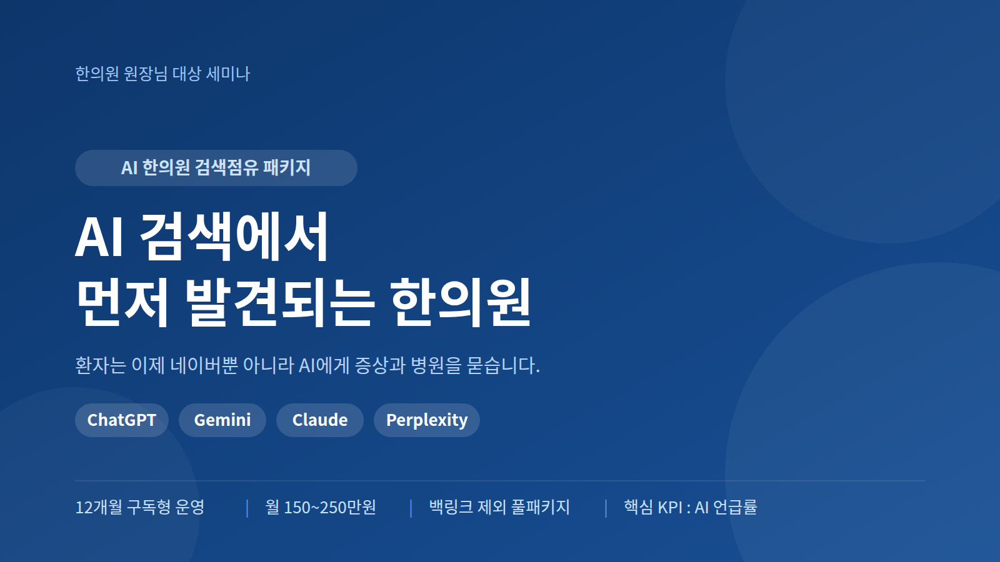
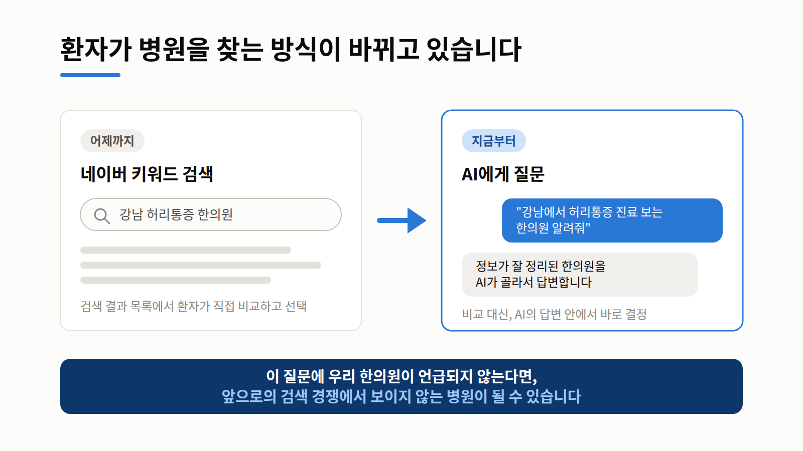
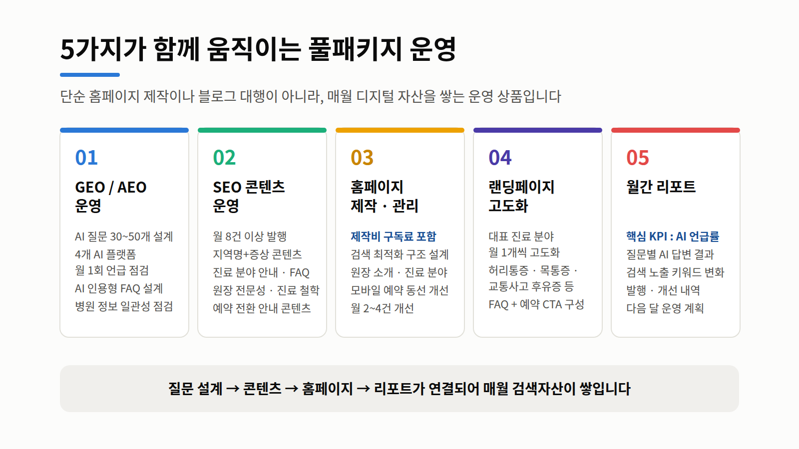
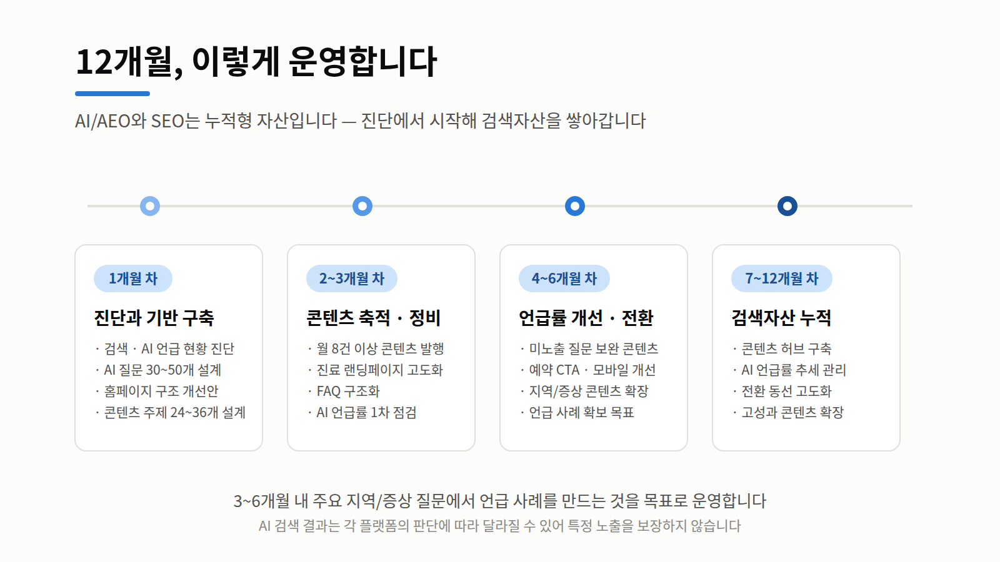
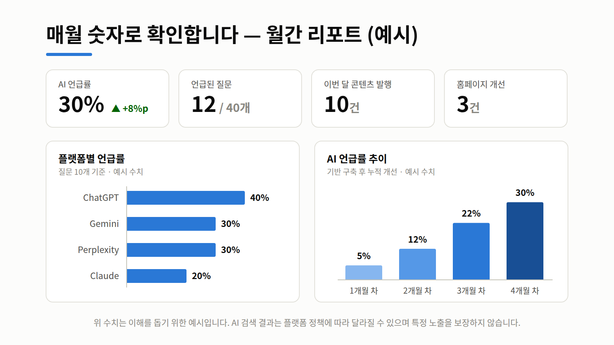
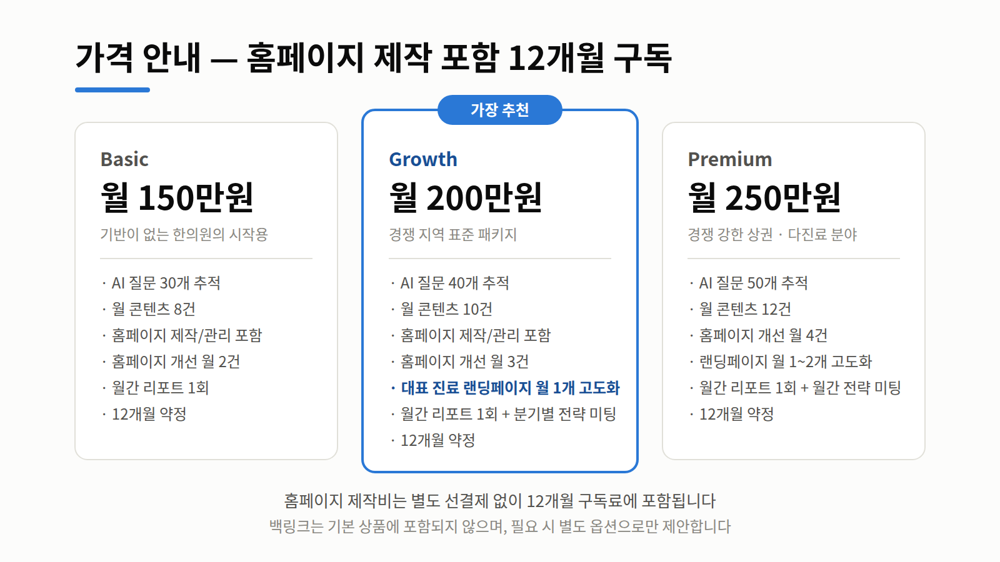
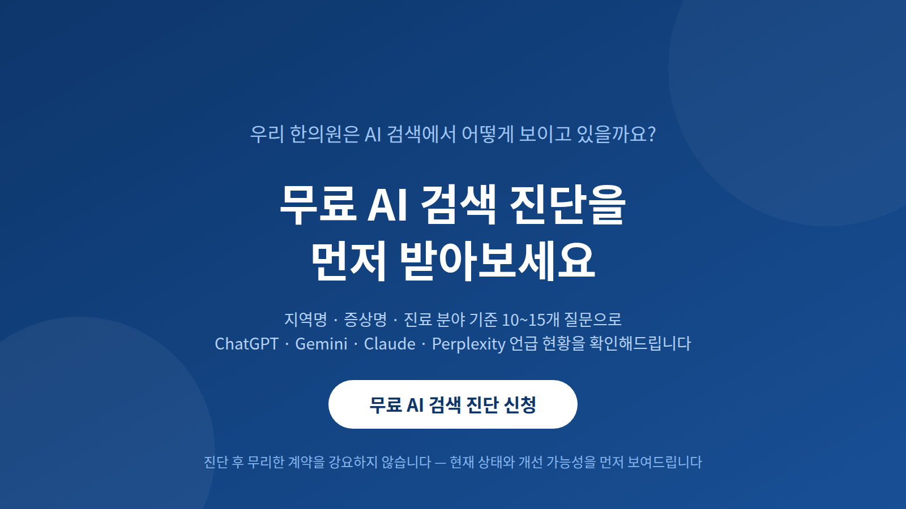

원장님 한의원은 지금 ChatGPT나 Gemini에
"지역명 + 증상 + 한의원"으로 물어봤을 때
언급되고 있나요?
확인해보신 적이 없다면 — 오늘 세미나가 도움이 될 것입니다.

"우리 한의원이 AI와 검색엔진이 이해하기 쉬운
디지털 자산으로 쌓이게 합니다."




한 번 만들고 끝나는 제작이 아니라, AI 검색 시대에 맞춰 매월 자산을 쌓는 12개월 운영입니다.
질문 설계 → 콘텐츠 → 홈페이지 → 리포트가 하나로 연결됩니다. 글만 발행하지 않습니다.
보장할 수 없는 것을 약속하지 않습니다. 대신 AI 언급률을 매월 숫자로 추적해 보여드립니다.
